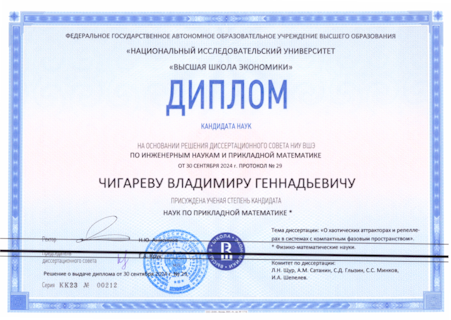
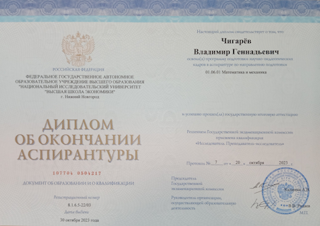
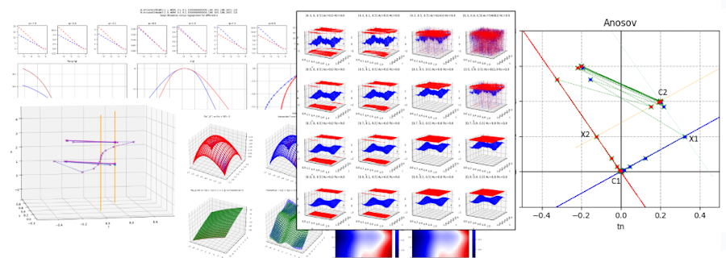

Кандидат наук по прикладной математике
2024
 Присуждение степени: Решением диссертационного совета присуждена ученая степень кандидата наук по прикладной математике (Протокол № 29 от 30.09.2024 г.)
Диссертация: О хаотических аттракторах и репеллерах в системах с компактным фазовым пространством
Аспирантура
2020-2024

За время аспирантуры:
- Опубликованы три статьи в одном из ведущих журналов по теории динамического хаоса и её приложениям.
- Прошел стажировку в Потсдамском университете у проф. А. Пиковского.
- Выступал с докладами на международных семинарах и конференциях.
- Сдал экзамены по иностранному языку, философии и методологии науки, а также государственный экзамен.
- Проходил педагогическую практику: в течение двух учебных лет проводил занятия по программированию для студентов 1 курса.
Публикации
- Chigarev V., Kazakov A., Pikovsky A. Attractor–repeller collision and the heterodimensional dynamics // Chaos: An Interdisciplinary Journal of Nonlinear Science. - 2023. - Т. 33 - С. 063113
- Chigarev V., Kazakov A., Pikovsky A. Mutual singularities of overlapping attractor and repeller // Chaos: An Interdisciplinary Journal of Nonlinear Science. - 2021. - Т. 31 - С. 083127
- Chigarev V., Kazakov A., Pikovsky A. Kantorovich-Rubinstein-Wasserstein distance between overlapping attractor and repeller // Chaos: An Interdisciplinary Journal of Nonlinear Science. - 2020. - Т. 30 - С. 073114
Ссылки
Google scholar: Vladimir Chigarev
Scopus Author ID: 57218414167
ORCID: 0000-0002-2848-951X
Инструменты для вычислений

При разработке программного комплекса для исследований активно использовал Python, включая библиотеку NumPy для работы с массивами чисел и Matplotlib для визуализации результатов. Также создал библиотеку c2dll для удобного вызова функций на C из Python, что позволило значительно ускорить самые вычислительно затратные части алгоритмов.
Среди прочего комплекс позволяет:
- вычислять расстояние Канторовича-Рубинштейна-Вассерштейна между аттрактором и репеллером;
- вычислять относительные размерности Реньи и взаимные сингулярности аттрактора и репеллера;
- строить гетероразмерные циклы для трехмерных систем, демонстрирующих пересечение аттрактора и репеллера.
Специалист
2004-2009
ВУЗ: Нижегородский государственный университет им. Н.И. Лобачевского
Факультет: Факультет вычислительной математики и кибернетики
Специальность: Прикладная информатика
Специализация: Математическое обеспечение ЭВМ
Диплом: Подсистема проведения массовых экспериментов и оптимизация работы с числами расширенной точности в программном комплексе Global Expert